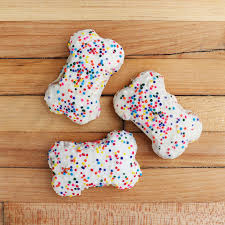

Doggy Shortbread

A recipe to make shortbread biscuits that look good enough for your doggy!
Ingredients
- 125g butter
- 55g caster sugar
- 180g plain flour
- 1tsp vanilla essence
- decorations!
Method
- Preheat the oven to 190c
- Beat the butter and sugar together until smooth
- Add in the vanilla essence
- stir in the flour until combined
- turn onto a clean work surface and knead the dough to bring the mixture into a smooth ball
- with a rolling pin, roll out the dough until it is 1cm thick
- Using your bone cutter, cut out shaps and place them onto the baking tray
- Bake for 15 mins
- Once cool, decorate!